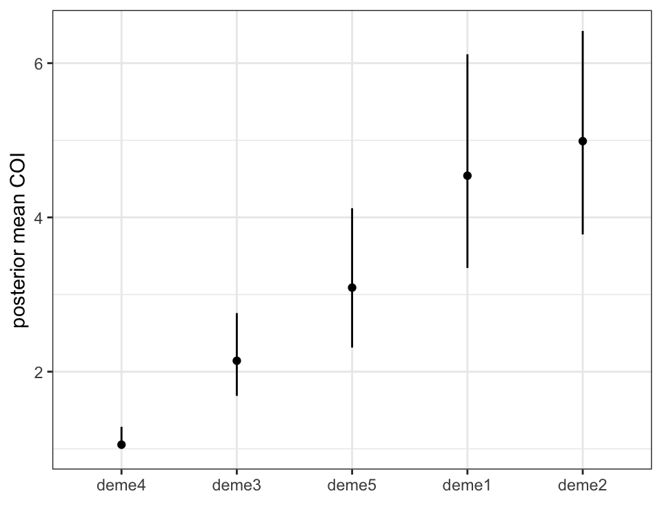
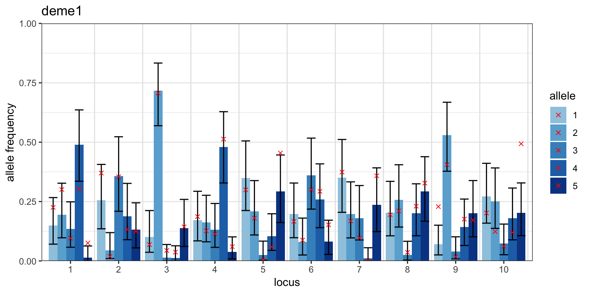
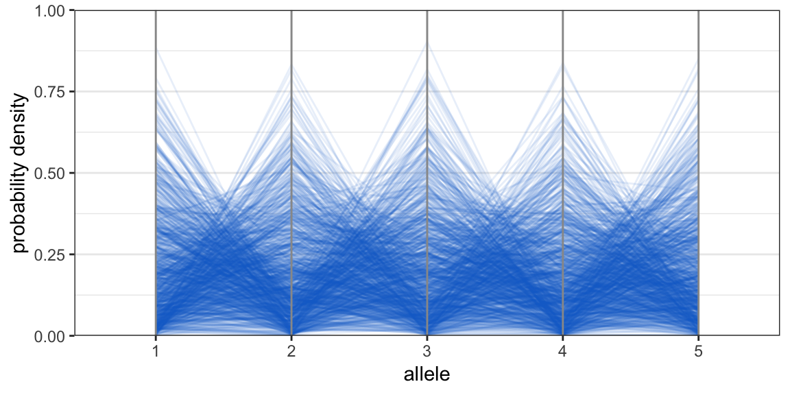

Multi-allelic data
Bob Verity
2019-02-25
multiallelic-data.RmdThis vignette demonstrates the MALECOT analysis pipeline for multi-allelic data, i.e. data for which there are more than two alleles at a locus. It covers:
- How multi-allelic format differs from bi-allelic format
- Binding multi-allelic data to a project and running a basic MCMC
- Checking MCMC behaviour
- Plotting results
- More realistic priors on multi-allelic allele frequencies
This tutorial assumes some prior knowledge about MALECOT, so if you are completely new to the program we recommend working through the simpler bi-allelic tutorial first.
Loading and running multi-allelic data
The bi-allelic data format used in previous tutorials cannot be used for multi-allelic data because now we can observe more than just homozygous and heterozygous calls at a locus. Instead, if there are J alleles at a locus then we can observe any subset of these alleles, ranging from just a single allele to all J alleles. MALECOT accommodates this by reading in data in long format.
The easiest way to understand long format is to simulate some multi-allelic data. This can be done using the standard sim_data() function but with the argument data_format = "multiallelic". As before, there are many elements that make up this simulated data, including records of the true values used in simulation, but here we are only interested in the “data” element. Here we will draw samples from 5 subpopulations covering a range of mean COIs from 1 to 5. We will assume that we have sequenced the samples at 10 loci, with each locus having 5 possible alleles. Finally, we will assume 10% missing data so we can see what missing data looks like in long format:
mysim <- sim_data(data_format = "multiallelic", n = 100, L = 10, K = 5, COI_mean = 1:5,
alleles = 5, prop_missing = 0.1)head(mysim$data)## sample_ID locus haplotype
## 1 samp001 1 3
## 2 samp001 2 -9
## 3 samp001 3 -9
## 4 samp001 4 4
## 5 samp001 5 5
## 6 samp001 6 4We can see that multi-allelic data has three columns, consisting of the sample ID, the locus, and the observed haplotype. The column names must match those shown above. The locus column must contain positive integer values starting at 1, meaning if loci are encoded as character strings then they must be converted to integers first. The same is true for haplotypes, which must be encoded as positive integers starting at 1, or as missing data.
Every locus must be represented in every sample - there can be no missing loci. Instead we can use the missing data character (-9 by default) to insert gaps in the data as needed. For example, in the simulated data above there is missing information in sample001 at loci 2 and 3, but this sample still has entries for all 10 loci rather than leaving these rows out entirely.
Once we have data in the correct format we can create a new project and bind the data to the project using the bind_data_multiallelic() function:
# create project and bind data
myproj <- malecot_project()
myproj <- bind_data_multiallelic(myproj, df = mysim$data)We create parameter sets in the usual way, and with the same options for priors as for bi-allelic data. The only difference is that there is currently no error model implemented in the multi-allelic method, meaning arguments like e1 and e2 are ignored (this is something that may change in future versions of the program). We run the MCMC using the run_mcmc() function:
# create parameter set
myproj <- new_set(myproj, name = "tutorial multiallelic", COI_model = "nb", COI_max = 20,
estimate_COI_mean = TRUE, COI_dispersion = 2, lambda = 1)
# run MCMC
myproj <- run_mcmc(myproj, K = 5, burnin = 1e4, converge_test = 1e2,
samples = 1e4, pb_markdown = TRUE)## Running MCMC for K = 5
## Burn-in phase
##
|
|=================================================================| 100%
## converged within 200 iterations
## Sampling phase
##
|
|=================================================================| 100%
## completed in 10.2614 seconds
##
## Processing results## Total run-time: 11.16 secondsYou may find that this MCMC takes considerably longer to run than the bi-allelic MCMC. This is because the likelihood calculation is more complicated when there are more than two alleles.
As always we need to check the behaviour of our MCMC before moving on to results:
plot_loglike_dignostic(myproj, K = 5)
get_ESS(myproj, K = 5)## rung1
## 636.3328Notice that the autocorrelation falls off much more slowly than it did under the bi-allelic MCMC, and hence the effective sample size is smaller. This is one example where we should re-run the MCMC with a larger number of samples to increase the chance that the MCMC has explored the space well. For the sake of this tutorial we will save time by loading in results obtained by re-running this MCMC with samples = 1e5:
# check behaviour
plot_loglike_dignostic(myproj, K = 5)
get_ESS(myproj, K = 5)## rung1
## 4309.956We now mave a nice fuzzy black caterpillar and a much larger effective sample size, giving us greater confidence that the MCMC has explored the space well.
Plotting results
Structure plots
The same plotting functions can be used irrespective of whether data is bi-allelic or multi-allelic. In the case of the posterior allocation or “structure” plot we find that there is generally more signal in multi-allelic data because there are more possible ways for subpopulations to look different from one another:
# structure plot
plot_structure(myproj, K = 5, divide_ind_on = TRUE)
In this example we find that 100 samples sequenced at just 10 loci with 5 alleles is enough to pull samples apart into 5 distinct subpopulations, while a similar analysis with bi-allelic data would have struggled to detect this level of structure.
Posterior COI plots
Perhaps the main advantage of multi-allelic data is in estimating COIs, where there tends to be far greater power than for bi-allelic data. This is because each new allele brings additional information about the number of circulating strains, rather than just relying on the overall proportion of heterozygous vs. homozygous calls. The following plot shows posterior 95% credible intervals in black, with true (simulated) COIs overlayed as red crosses:
# load ggplot2 package
library(ggplot2)
# produce plot of posterior COIs
posterior_COI <- plot_COI(myproj, K = 5)
# overlay true COI values
posterior_COI <- posterior_COI + geom_point(aes(x = 1:100, y = mysim$true_m), col = "red", shape = 4)
posterior_COI
In this example we find that estimates are precise up to COIs of around 3 or 4, then become imprecise at 5 and above. Generally speaking our ability to discern high COIs increases with the number of possible alleles at a locus.
The same gains in precision can be seen in the estimated mean COI per subpopulation:
# get correct plotting order
group_order_k5 <- get_group_order(myproj, K = 5, target_group = mysim$true_group)
plot_order <- order(group_order_k5)
plot_COI_mean(myproj, K = 5, deme_order = plot_order)
Posterior allele frequency plots
The only plot that differs between bi-allelic and multi-allelic data is the posterior allele frequency plot, which is now a grouped barplot showing posterior 95% credible intervals for each separate allele. The following plot shows posterior allele frequencies for the first deme only, with true values overlayed as red crosses:
# produce plot of posterior allele frequencies for this subpopulation
posterior_p <- plot_p(myproj, K = 5, deme = 1)
# get true simulated allele frequencies for this subpopulation
sim_p <- mapply(function(x){x[group_order_k5[1], ]}, mysim$true_p, SIMPLIFY = FALSE)
# get plotting results into dataframe
df <- data.frame(locus = rep(1:10, each = 5),
p = unlist(sim_p),
allele = rep(1:5, 10))
# overlay true allele frequencies onto plot
posterior_p <- posterior_p + geom_point(aes(x = locus, y = p, group = allele), data = df,
position = position_dodge(width = 0.9), col = "red", shape = 4)
posterior_p
More realistic priors on allele frequencies
In the previous tutorial we saw how different priors could be used to define skewed allele frequency distributions, and how different prior shapes could be explored using the plot_prior_p() function. The same is true for multi-allelic data, except now the prior plots look different because the prior is J-dimensional, where J is the number of alleles. In multi-allelic plots the J dimensions are visualised using a parallel coordinates plot, in which axes are displayed parallel to one another rather than perpendicular. The prior distribution is visualised using 1000 random draws from this distribution, corresponding to 1000 simulated trajectories on the plot.
The following example shows a prior skewed in favour of the second allele. The expected allele frequency for allele j is equal to lambda[j]/sum(lambda), which in this case yields an expectation of 0.375 for the second allele:
plot_prior_p(lambda = c(1,6,2,3,4))
The prior uncertainty is dictated by the magnitude of lambda, with larger values leading to reduced uncertainty. For example, we could define a second prior with exactly the same expected allele frequencies but lower uncertainty by multiplying all lambda values in the above by 10:
plot_prior_p(lambda = c(1,6,2,3,4)*10)The default prior in the multi-allelic case is a value of lambda[j] = 1 for every allele, giving an expected allele frequency of 1/J for every allele:
plot_prior_p(lambda = 1, alleles = 5)
When thinking about the prior on allele frequencies it is useful to imagine that each subpopulation has its own allele frequencies, drawn by picking one of these trajectories at random. Therefore if the prior is very precise (like the second plot above) then we are stating that we expect subpopulations to look very similar in their composition. If this seems unlikely a priori then we should use a smaller value of lambda. Our aim when designing priors is to capture the plausible range of values, not what we expect the actual values to be.
The next tutorial covers how to compare different values of \(K\) and different models in MALECOT.